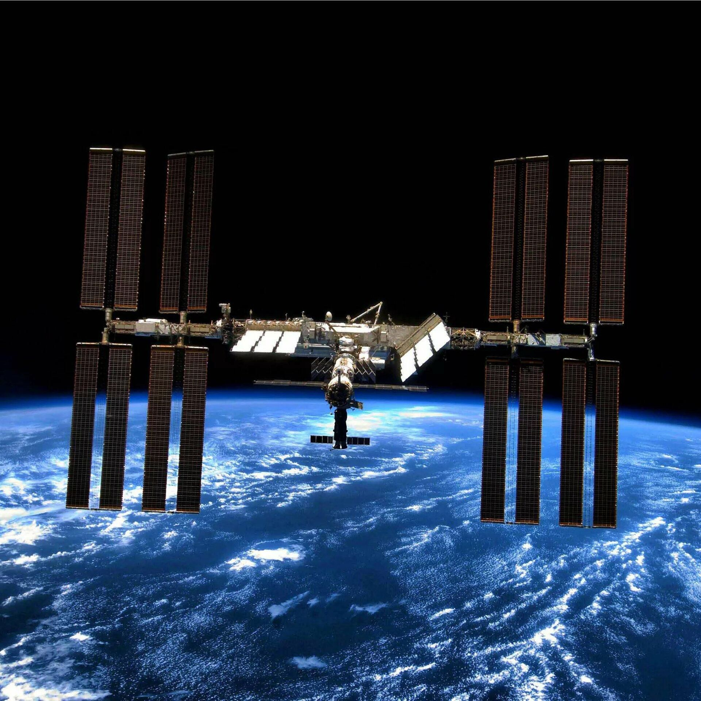
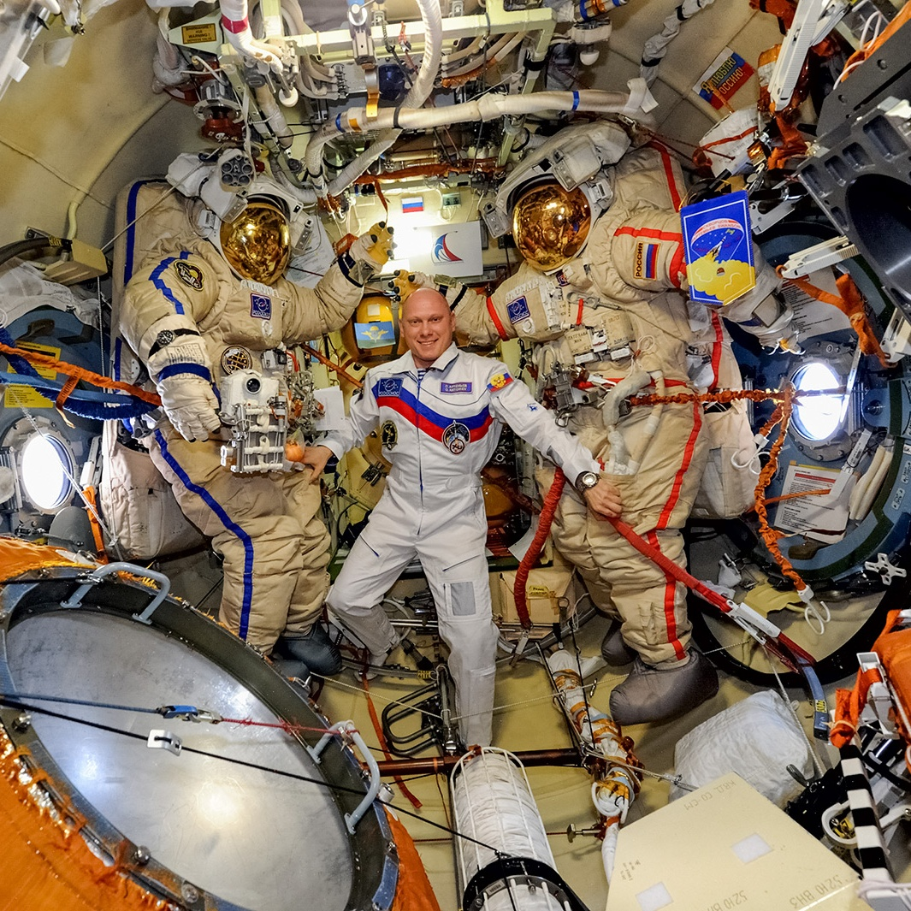

В 2022 году исполняется 24 года самому дорогому и амбициозному проекту в области пилотируемой космонавтики —
Международной космической станции. С 1998 года МКС находится на земной орбите и используется научной общественностью
многих стран для проведения исследований в космической сфере. Однако если ученые понимают важность и значимость
орбитальной станции, то обыватель далеко не всегда представляет, что собой представляет МКС и в чем ее польза для человечества.
Станция МКС — это международная пилотируемая станция, расположенная на земной орбите и используемая как
исследовательский комплекс в условиях открытого космоса. МКС существует с 1998 года, когда были состыкованы
ее первые модули. Международный статус МКС подтверждается участием в проекте нескольких стран: России, США,
нескольких стран ЕС, Японии и Канады.
Принцип построения МКС — модульный. Собранные на Земле готовые блоки доставляют на орбиту и пристыковывают к МКС.
На сегодняшний момент станция состоит из 15 основных модулей:
5 российских («Заря», «Рассвет», «Звезда», «Поиск», «Пирс»);
7 американских («Юнити», «Дестини», «Транквилити», «Квест», «Купола», «Гармония», «Леонардо»);
европейского «Коламбус»;
японского «Кибо»;
экспериментального жилого модуля BEAM, созданного частной компанией Bigelow Aerospace.
Максимальный экипаж МКС составляет 6 человек – именно на столько космонавтов и астронавтов рассчитаны
системы жизнеобеспечения станции. Однако из-за прекращения программы полетов управляемых шаттлов
максимальная численность экипажа была снижена до 5 человек. Так как российский пилотируемый корабль
«Союз МС» вмещает всего трех пилотов, а новый пассажирский корабль «Crew Dragon» – двух, то одновременно
на МКС обитает не более 5 членов экипажа.

История создания МКС
Первоначально Международная космическая станция создавалась как противовес советской станции «Мир»,
поэтому в ее создании участвовали лишь страны Запада и Япония. О проекте под кодовым названием Freedom («Свобода»)
было заявлено президентом США Р. Рейганом в 1984 году – в самый разгар Холодной войны.
Однако стоимость проекта была слишком велика даже для богатых стран, к тому же к началу 90-х годов изменилась и
политическая ситуация в мире. Независимая Россия, первоначально планировавшая построить станцию «Мир-2»,
столкнулась с финансовыми трудностями. Поэтому было принято объединить усилия в прошлом противоборствующих лагерей.
17 июня 1992 года Российское космическое агентство и NASA заключили соглашение о совместном исследовании космоса.
В рамках программы «Мир – Шаттл» и родилась идея о строительстве МКС. 2 сентября 1993 года правительства РФ и США
объявили о совместном создании орбитальной станции, получившей свое нынешнее название. В 1995 году был утвержден ее
эскиз, а годом позже была утверждена конфигурация МКС.
Как уже говорилось, по состоянию на 2020 год станция состоит из 15 основных модулей и нескольких второстепенных.
Однако развитие станции не остановилось. По планам, в будущем планируется доставить на орбиту 4 российских модуля
(«Наука», ERA, «Причал» и НЭМ-1), которые могут составить основу национальной российской станции после вывода МКС из эксплуатации.

Кому принадлежит МКС?
Несмотря на международный статус станции, вклад участников нельзя назвать одинаковым.
Изготовителем и владельцем большинства орбитальных блоков являются Соединенные Штаты.
Российский сегмент МКС состоит из 5 основных модулей. Модулем «Кибо» владеет и управляет Япония,
научной лабораторией «Коламбус» – ЕС в лице Европейского космического агентства.
Также активное участие в создании станции приняла Канада, которая является изготовителем
нескольких компонентов и владельцем Орбитальной стрелы с камерами. На ранних стадиях участие
в создании станции приняли участие Великобритания и Бразилия.
В связи с обилием стран-участниц проекта часто возникает вопрос: «Кому принадлежит МКС?».
Правовой статус МКС определяется международными соглашениями, юрисдикция каждого из государств
распространяется лишь на тот сегмент, собственником которого оно является.
Всю станцию можно разделить на два основных блока:
российский сегмент, право пользования принадлежит только РФ;
американский сегмент, которым владеют США, допускающие астронавтов других стран-участниц проекта.
Остальные участники проекта могут использовать российский сегмент только на основании двусторонних
соглашений между РФ и страной-партнером. Отечественные космонавты могут находиться лишь в российском сегменте.
Использование американского сегмента, к которому относится также модуль «Заря», производится остальными членами
экипажа исходя из заранее определенных процентов от общего времени использования.
Что же дальше?
МКС – самый дорогой проект, когда-либо созданный человеком. На сборку и поддержание эксплуатации было израсходовано
более 160 млрд. долларов, с каждым годом расходы лишь увеличиваются. По планам NASA и Роскосмоса, МКС пробудет на орбите,
по крайней мере, до 2030 года, так что эта цифра значительно возрастет. Однако ценность МКС измеряется не в прибыли,
которую она не приносит, а в получаемом научно-исследовательском опыте и самом осознании, что человечество может не
только кратковременно покорить космос, но и способно задержаться в нем надолго.